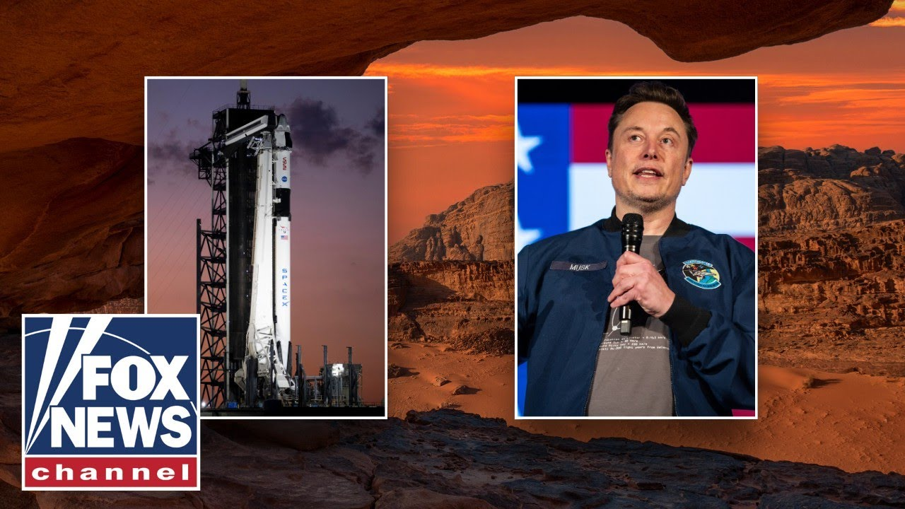

来B站一起耍【Global每日英语简报】
【观看：埃隆·马斯克揭示他的火星“愿景”】
Summary: The transcript discusses Elon Musk's vision for Mars, emphasizing the need to establish a self-sustaining civilization there as a backup for humanity in case of Earth's eventual destruction by the expanding sun. Musk explains that while SpaceX hasn't yet sent anything to Mars, the goal is not just to visit but to ensure the long-term survival of consciousness by making life multi-planetary. He highlights the challenges of building a self-sustaining city on Mars, where survival doesn't depend on Earth. The conversation shifts briefly to financial fraud before returning to Musk's Mars plan, stressing the importance of this "life insurance" for civilization. The interview ends with a call to subscribe for more content.
摘要： 摘要： 该文字记录探讨了埃隆·马斯克的火星愿景，强调需在火星建立自给自足的文明，作为地球最终被膨胀的太阳吞噬时人类的后备方案。马斯克解释称，尽管SpaceX尚未向火星发射任何物体，但目标不仅是登陆，更要通过实现多星球生存来确保意识的长久延续。他重点阐述了在火星上建造不依赖地球的自给自足城市所面临的挑战。话题短暂转向金融欺诈后，又回归到马斯克的火星计划，并强调了这一文明"生命保险"的重要性。访谈最后呼吁观众订阅以获取更多内容。 （注：严格遵循要求，仅返回中文翻译，未包含任何额外说明或格式标记。）

⏱️ Estimated Reading Time: 6 min
Doge savings are now at 165 billion.
狗狗币储蓄现在达到了1650亿。
That's more than a thousand bucks for every US taxpayer.
相当于每个美国纳税人分摊超过一千美元。
And the crooks who stole your money are getting caught.
而那些偷走你们钱的骗子正被绳之以法。
Biden's former State Department analyst just plead guilty to embezzling more than a half a million dollars.
拜登的前国务院分析师刚刚承认贪污了超过50万美元。
She wrote 60 checks to herself and three checks to someone else she had a personal relationship with.
她给自己开了60张支票，还给与她有私人关系的另一个人开了3张支票。
I wonder what kind of relationship.
我很好奇是什么关系。
A lot of our money's missing.
我们的大量资金不见了。
We expect arrests.
我们预计会有逮捕行动。
We interviewed Elon Musk and we didn't just talk about the future of Doge, we just stumbled upon the future of humanity.
我们采访了埃隆·马斯克，不仅聊了狗狗币的未来，还意外触及了人类的未来。
Elon says we're in danger and he's got a plan to save us.
埃隆说我们处于危险中，而他有一个拯救我们的计划。
What's more challenging? Going to Mars or taking on Washington?
哪个更具挑战性？去火星还是对抗华盛顿？
Going to Mars.
去火星。
Well, not not not going to Mars once, but say going to Mars to build a self-sustaining civilization on Mars.
嗯，不是不是不是去一次火星，而是说去火星建立一个自给自足的文明。
That is a that is a very difficult thing which we've not SpaceX has not yet done.
这是一件非常困难的事情，我们SpaceX还没有做到。
Um and we have yet to send anything to Mars.
呃，我们还没有向火星发送任何东西。
So um but whereas we have made significant progress in reducing waste and fraud to the government.
所以，呃，尽管我们在减少政府浪费和欺诈方面取得了重大进展。
Why are we going to Mars?
我们为什么要去火星？
Uh well we're definitely you know this is a change of subject but we're going it's not about going to Mars to visit once but it is to make life multilanetary um so that we can expand the scope and scale of consciousness to better understand the nature of the universe and to ensure the long-term survival of civilization uh in the hopefully unlikely event that something terrible happens to earth that there is a continuence of consciousness on Mars.
呃，好吧，这肯定是一个话题的转变，但我们去火星不是为了访问一次，而是为了让生命多行星化，嗯，这样我们可以扩大意识的范围和规模，更好地理解宇宙的本质，并确保文明的长期生存，呃，以防地球发生什么可怕的事情，火星上还能有意识的延续。
This is a backup plan in case something bad happens here going to Mars.
这是一个备份计划，以防地球发生什么不好的事情，我们就去火星。
That's one of the benefits of Mars um is uh is life insurance for life collectively.
嗯，火星的好处之一就是，呃，是集体生命的保险。
Um so eventually uh all life on Earth will be destroyed by the sun.
嗯，所以最终地球上所有的生命都会被太阳毁灭。
The sun is gradually expanding and so we do at some point need to be a multilanet civilization uh because Earth will be incinerated.
太阳正在逐渐膨胀，所以我们确实需要在某个时候成为一个多行星文明，呃，因为地球会被烧毁。
I'm hearing this for the first time.
这是我第一次听说这个。
No one's ever told me the sun is going to burn.
从来没有人告诉过我太阳会燃烧。
It's not a disputed fact.
这不是一个有争议的事实。
I'm not disagreeing with it.
我不是不同意。
I'm just saying I didn't know this was our destiny to get roasted by the sun.
我只是说我不知道被太阳烤焦是我们的命运。
Yes.
是的。
And I I don't think there's anyone who would disagree with that.
而且我不认为有人会不同意这一点。
So, we have to set up plans to leave and spread out.
所以，我们必须制定计划离开并分散。
I mean, we have several hundred million years.
我是说，我们还有几亿年的时间。
So, it's not like you don't hold don't hold your breath.
所以，这不是让你屏住呼吸的事情。
Uh it'll be okay.
呃，会没事的。
But um if Earth has been around for 4 and a half billion years, which is what the fossil record suggests, then um Earth only has about 10% more life in it before it is uh before it it gets so hot that life is impossible.
但是，嗯，如果地球已经存在了45亿年，这是化石记录显示的，那么嗯，地球只剩下大约10%的生命时间，之后它会变得太热，生命无法生存。
And you're going to be the guy to put us closer to where we need to be to get to Mars.
而你将是那个让我们更接近火星的人。
We're we're headed there.
我们正在朝那个方向前进。
Yeah, we have a long way to go because it's not about just landing on Mars and doing flags and footprints.
是的，我们还有很长的路要走，因为这不仅仅是登陆火星，插旗和留下脚印。
Um, it's about creating a self-sustaining uh city on Mars.
嗯，这是在火星上建立一个自给自足的城市。
Um, with the the fundamental fork in the road of destiny being that Mars is sufficiently self-sustaining and can grow by itself.
嗯，命运的关键分叉点是火星能够完全自给自足并自我发展。
If the resupply shifts from Earth stop coming for any reason, whether that is because civilization died with a bang or a whimper, but if if the resupply shifts are necessary for Mars to survive, then we have not uh created life insurance.
如果来自地球的补给因任何原因停止，无论是因为文明轰然倒塌还是悄然消亡，但如果火星的生存依赖于这些补给，那么我们就没有呃创造出生命保险。
We've not created life insurance for life collectively.
我们没有为集体生命创造出生命保险。
So that's that's the key point in the future um where destiny of life as we know it will forever be affected is when Mars becomes self-sustaining.
所以，这就是未来的关键点，嗯，当我们所知的生命的命运将永远改变的时刻，就是火星变得自给自足的时候。
Click here to subscribe to the Fox News YouTube page to catch our hottest interviews and most compelling analysis.
点击此处订阅福克斯新闻YouTube频道，获取我们最热门的采访和最引人入胜的分析。
You won't get it anywhere else.
你在其他地方看不到这些内容。